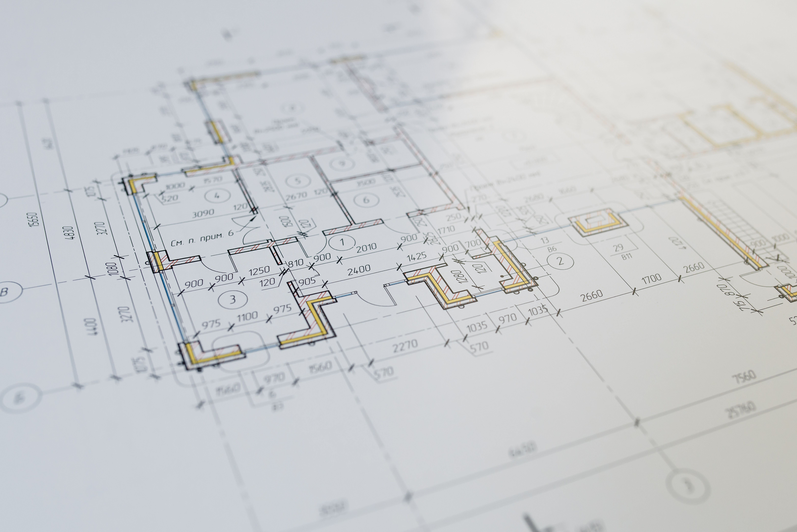

Les 10 films incontournables des années 90

Retour sur les films qui ont marqué toute une génération.
Bienvenue sur ciné Actu, le webzine qui parle de cinéma, séries et des coulisses du grand écran.
Notre équipes de passionnés vous fait découvrir les films à ne pas manquer, ainsi que les films HD.
Vous pouvez aussi écouter notre podcast pour
prolonger la discussion.
Retour sur les films qui ont marqué toute une génération.

Notre sélection des séries à ne pas manquer.

Découvrez ce qui se passe derrière la caméra.

Un tour d'horizon des films d'animation cultes.
